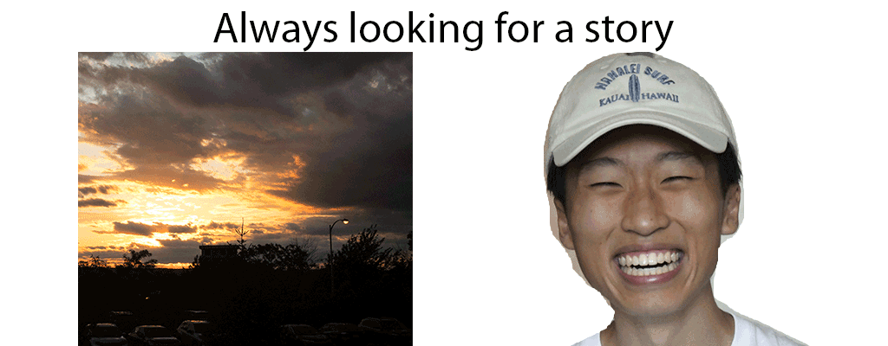

I am majoring in Broadcast Digital Journalism and minoring in Information Management & Technology. I am interested in sports journalism with a focus in sports statistics. I am currently an independent contractor for the Orlando Magic Daily and Rip City Project at FanSided. Prior to working for FanSided, I interned at DBLTAP, an esports news site which is a sister site to FanSided. Outside of writing about sports, I enjoy reading, playing guitar and unsurprisingly, playing basketball. My favorite team is neither the Orlando Magic or the Portland Trailblazers but the New York Knicks.